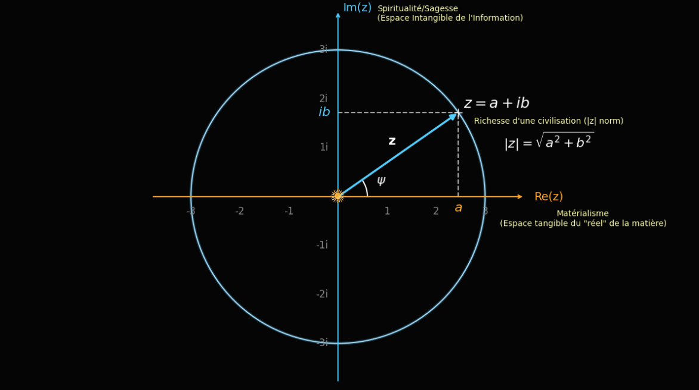

The World is Complex: The Primordial Equation of Reality
Le monde est complexe : L'Équation Primordiale de la Réalité
From One-Dimensional Accounting to the Hermitian Synthesis of Energy and Information
De la Comptabilité Unidimensionnelle à la Synthèse Hermitienne de l'Énergie et de l'Information


“The shortest and best way between two truths of the real domain often passes through the imaginary one.”
« Le chemin le plus court et le meilleur entre deux vérités du domaine réel passe souvent par le domaine complexe. »
We grew up with a crippled conceptualization of reality. While our physical universe unfolds in a three-dimensional spatial volume ($\mathbb{R}^3$), modern economics has violently reduced the measure of value, progress, and existence to a single straight line: the axis of real numbers ($\mathbb{R}$). On this one-dimensional accounting ruler, a standing primary forest counts for zero until it is sawed into lumber, and sovereign monetary creation is reduced to an arbitrary scalar stripped of any thermodynamic constraint. By collapsing reality onto a flat line, we have blinded ourselves to the orthogonal dimensions of organization, memory, and information.
Nous avons grandi avec une conceptualisation infirme de la réalité. Si notre univers physique se déploie dans un volume spatial tridimensionnel ($\mathbb{R}^3$), l'économie moderne a violemment réduit la mesure de la valeur, du progrès et de l'existence à une simple ligne droite : l'axe des nombres réels ($\mathbb{R}$). Sur cette règle comptable unidimensionnelle, une forêt primaire debout vaut zéro tant qu'elle n'est pas débitée en planches, et la création monétaire est réduite à un scalaire arbitraire détaché de toute contrainte thermodynamique. En écrasant la réalité sur une ligne plate, nous nous sommes rendus aveugles aux dimensions orthogonales de l'organisation, de la mémoire et de l'information.
Fundamental physics, however, whispers a far more demanding architecture. From electromagnetic wave propagation to quantum state amplitudes, nature never computes on $\mathbb{R}$ alone; it operates on the complex plane ($\mathbb{C}$). Our civilization is complex in the strictest mathematical sense of the word. Its macro-state $z$ obeys the primordial equation, expressed simultaneously in Cartesian and Eulerian polar forms:
La physique fondamentale, pourtant, nous murmure une architecture autrement plus exigeante. De la propagation des ondes électromagnétiques aux amplitudes de probabilité quantiques, la nature ne calcule jamais sur $\mathbb{R}$ seul ; elle opère sur le plan complexe ($\mathbb{C}$). Notre civilisation est complexe au sens le plus strictement mathématique du terme. Son macro-état $z$ obéit à l'équation primordiale, exprimée simultanément sous ses formes cartésienne et polaire d'Euler :
In the wake of our digital awakening, mastering the intimate mechanics of this equation is the condition of our survival. We are not doomed to choose between the blind burning of matter ($a$) and the disembodied nihilism of pure virtuality ($ib$). We are called upon to architect their synthesis ($z$).
Dans notre éveil à l'ère numérique, maîtriser la mécanique intime de cette équation est la condition même de notre survie. Nous ne sommes pas voués à choisir entre la combustion aveugle de la matière ($a$) et le nihilisme désincarné du tout-virtuel ($ib$). Nous sommes appelés à bâtir leur synthèse ($z$).
| Component | Composante | Mathematical Role | Rôle Mathématique | Biophysical & Cybernetic Meaning | Signification Biophysique & Cybernétique |
|---|---|---|---|---|---|
a = Re(z) |
Real Axis ($\mathbb{R}$) | Axe Réel ($\mathbb{R}$) | Solar Emergy ($\text{seJ}$): Embodied thermodynamic work & biomass | Émergie Solaire ($\text{seJ}$) : Travail thermodynamique incorporé & biomasse | |
b = Im(z) |
Imaginary Axis ($i\mathbb{R}$) | Axe Imaginaire ($i\mathbb{R}$) | Negentropic Information: Cryptographic truth & genetic/cultural code | Information Néguentropique : Vérité cryptographique & code génétique/culturel | |
i = √-1 |
90° Rotation Operator ($\hat{J}$) | Opérateur de Rotation 90° ($\hat{J}$) | Thermodynamic Transducer: Proof-of-Work & Landauer erasure bridge | Transducteur Thermodynamique : Preuve de Travail & pont de Landauer | |
z̄ = a - ib |
Hermitian Conjugate | Conjugué Hermitien | Cryptographic Mirror: Unforgeable digital shadow of physical value | Miroir Cryptographique : Ombre numérique infalsifiable de la valeur physique | |
|z| = √(z·z̄) |
Modulus / Norm | Module / Norme | Integral Wealth: Symbiotic capacity of Homo Biodiversitas | Richesse Intégrale : Capacité symbiotique de l'Homo Biodiversitas | |
ψ = arg(z) |
Phase Angle | Angle de Phase | Consensus Alignment: Ratio of informational order to raw energy ($\arctan(b/a)$) | Alignement du Consensus : Ratio d'ordre informationnel sur l'énergie brute ($\arctan(b/a)$) |
1. The Real Axis ($a$): The Sun Standard and Odum's Emergy
1. L'Axe Réel ($a$) : L'Étalon Solaire et l'Émergie d'Odum
The real coordinate of our existence, $a = \operatorname{Re}(z)$, is clay, rock, metabolic flesh, and above all: energy. For decades, neoclassical economics has operated under the delusion that value is a purely subjective psychological preference, allowing central banks to decree purchasing power ex nihilo via fiat currency. This violation of conservation laws has unleashed a predatory asymmetry—the Cantillon Effect—financing the accelerated liquidation of our biosphere.
La coordonnée réelle de notre existence, $a = \operatorname{Re}(z)$, c'est la glaise, la roche, la chair métabolique, et par-dessus tout : l'énergie. Depuis des décennies, l'économie néoclassique opère sous l'illusion que la valeur n'est qu'une préférence psychologique subjective, autorisant les banques centrales à décréter du pouvoir d'achat ex nihilo par la monnaie fiat. Cette violation des lois de conservation a déchaîné une asymétrie prédatrice — l'Effet Cantillon — finançant la liquidation accélérée de notre biosphère.
Yet in the physical universe, nothing is free. Every tree leaf, every aquifer, every living organism possesses an objective, incompressible thermodynamic cost. In the 1970s, systems ecologist Howard T. Odum formalized this truth through the concept of EmergySolar Emergy (seJ)Spelled with an "m" for "Energy Memory". It quantifies all the available solar energy (exergy) that was directly and indirectly consumed in the past to make a product or service in the biosphere. (spelled with an "m" for energy memory), demonstrating that the ultimate measure of physical value is the cumulative historical work required to bring a structure into existence:
Or, dans l'univers physique, rien n'est gratuit. Chaque feuille d'arbre, chaque nappe phréatique, chaque organisme vivant possède un coût thermodynamique objectif et incompressible. Dès les années 1970, l'écologue des systèmes Howard T. Odum a formalisé cette vérité à travers le concept d'ÉmergieÉmergie Solaire (seJ)Contraction de "Énergie" et "Mémoire". Elle quantifie la somme historique de toute l'énergie solaire disponible (exergie) directement et indirectement dissipée pour produire une ressource ou un écosystème. (la mémoire de l'énergie), démontrant que la mesure ultime de la valeur physique est l'intégrale temporelle du travail exergétique requis pour faire advenir une structure :
Here, $P_{\mathrm{ex}}(\tau)$ is the instantaneous flow of available energy (exergy) and $\mathcal{T}_r$ is its Transformity (in solar emjoules per Joule, $\text{seJ/J}$)—the hierarchical concentration effort performed by the biosphere. The real axis of our world is governed by an unforgiving Sun Standard. Whether we examine a human metropolis or the extraordinary concentration of endemic biodiversity in ecological sanctuaries like Madagascar, every structure on axis $a$ is a slow, prodigious crystallization of solar photons accumulated over geological time.
Ici, $P_{\mathrm{ex}}(\tau)$ représente le flux instantané d'énergie disponible (exergie) et $\mathcal{T}_r$ sa Transformité (en emjoules solaires par Joule, $\text{seJ/J}$) — c'est-à-dire l'effort de concentration hiérarchique accompli par la biosphère. L'axe réel de notre monde est régi par un Étalon Solaire implacable. Qu'il s'agisse d'une métropole humaine ou de l'incomparable concentration de biodiversité endémique que l'on étudie dans des sanctuaires écologiques comme Madagascar, toute structure sur l'axe $a$ est une lente et prodigieuse cristallisation de photons solaires accumulés au fil des ères géologiques.
2. The Orthogonal Space ($ib$): The Operator $i$ as a Thermodynamic Transducer
2. L'Espace Orthogonal ($ib$) : L'Opérateur $i$ comme Transducteur Thermodynamique
“Information is information, not matter or energy. No materialism which does not admit this can survive at the present day.”
« L'information est de l'information, ce n'est ni de la matière, ni de l'énergie. Aucun matérialisme qui ne l'admet pas ne peut survivre à l'heure actuelle. »
Protecting the real axis ($a$) is our civilizational imperative. Yet classical institutions have failed to protect it because they tried to measure and preserve physical ecosystems using a currency that sits on the same flat, manipulable line. To sanctuarize physical value without consuming it, we need an orthogonal dimension: $ib$.
Protéger l'axe réel ($a$) est notre impératif civilisationnel. Pourtant, nos institutions classiques y ont échoué parce qu'elles ont tenté de mesurer et de préserver les écosystèmes physiques avec une monnaie située sur la même ligne plate et manipulable. Pour sanctuariser la valeur physique sans la détruire, il nous fallait une dimension strictement orthogonale : $ib$.
The word "imaginary" is a regrettable historical misnomer coined by Descartes; in physics, there is nothing fictitious about $i = \sqrt{-1}$. Geometrically, multiplying a real magnitude by $i$ is not an evaporation into fantasy—it is an exact $90^\circ$ counterclockwise rotation ($\pi/2$ radians) out of the classical material line. In matrix algebra, the unit $i$ is the antisymmetric rotation operator $\hat{J}$:
Le terme « imaginaire » est un malentendu historique regrettable hérité de Descartes ; en physique, $i = \sqrt{-1}$ n'a strictement rien de fantaisiste. Géométriquement, multiplier une grandeur réelle par $i$ n'est pas une fuite dans l'irréel : c'est une rotation mathématique exacte de $90^\circ$ ($\pi/2$ radians) hors de la ligne matérielle classique. En algèbre matricielle, l'unité $i$ s'incarne dans l'opérateur de rotation antisymétrique $\hat{J}$ :
How do we perform this $90^\circ$ rotation in the real world? How do we convert raw thermodynamic work ($a$) into incorruptible informational order ($ib$)? By invoking Rolf Landauer's Principle (1961) and Satoshi Nakamoto's Proof-of-Work (2009). When a distributed network expends physical exergy to compute cryptographic hashes, it sacrifices thermal entropy in the real world ($a$) to erase uncertainty and crystallize an immutable block on the informational axis ($ib$). Every validating node acts as a phenomenological transducer, collapsing a cloud of unconfirmed possibilities into a single, unforgeable historical state.
Comment opère-t-on cette rotation de $90^\circ$ dans le monde réel ? Comment convertit-on un travail thermodynamique brut ($a$) en un ordre informationnel incorruptible ($ib$) ? En conjuguant le Principe de Rolf Landauer (1961) et la Preuve de Travail de Satoshi Nakamoto (2009). Lorsqu'un réseau distribué dépense de l'exergie physique pour calculer des hachages cryptographiques, il sacrifie de l'entropie thermique sur l'axe réel ($a$) afin d'effacer l'incertitude et de cristalliser un bloc immuable sur l'axe informationnel ($ib$). Chaque nœud validateur agit alors comme un transducteur phénoménologique, figeant un nuage de probabilités en un état historique unique et infalsifiable.
Level 1: The Tree and Its Shadow (Beginner) Niveau 1 : L'Arbre et son Plan d'Architecte (Débutant)
Imagine an ancient oak tree. Its wood, roots, and leaves exist on the Real Axis ($a$): if a fire burns the tree, the wood turns to ash and heat. Yet how did the oak know how to grow its branches at exact angles to capture sunlight? Because inside every cell sits its DNA—an invisible informational blueprint. That blueprint exists on the Imaginary Axis ($ib$). You cannot weigh a blueprint in kilograms of wood, yet without it, the wood is just a pile of dead matter. Civilization needs both the living forest ($a$) and an incorruptible ledger ($ib$) that recognizes and protects its value.
Imaginez un chêne centenaire. Son bois, ses racines et ses feuilles existent sur l'Axe Réel ($a$) : si un incendie le ravage, le bois retourne à la cendre et à la chaleur. Mais comment ce chêne a-t-il su déployer ses branches selon des angles précis pour capter la lumière solaire ? Parce qu'au cœur de chacune de ses cellules réside son ADN — un plan d'architecte informationnel invisible. Ce code réside sur l'Axe Imaginaire ($ib$). On ne mesure pas un plan d'architecte en kilogrammes de bois, et pourtant, sans lui, la matière n'est qu'un tas de molécules inertes. Notre civilisation a besoin à la fois de la forêt vivante ($a$) et d'un registre incorruptible ($ib$) capable d'en sanctuariser la valeur.
Level 2: Dimensional Normalization & Landauer's Bridge (Intermediate) Niveau 2 : Normalisation Dimensionnelle & Pont de Landauer (Intermédiaire)
A rigorous physicist will immediately ask: "How can you write $z = a + ib$ if $a$ is measured in Joules and $b$ is measured in bits?" In physics, you can only add quantities that share the same dimension. The solution lies in Landauer's thermodynamic equivalence ($E_L = k_B T \ln 2$) and the Nakamoto Action. By normalizing physical Emergy $a$ by a reference solar exergy quantum $E_0$, and normalizing the informational state $b$ by the thermodynamic cost required to seal one bit of consensus ($\epsilon_{\mathrm{bit}}$), both $a$ and $b$ become dimensionless coordinates of a unified thermodynamic phase space.
Un physicien rigoureux posera immédiatement la question : « Comment pouvez-vous écrire $z = a + ib$ si $a$ se mesure en Joules et $b$ en bits ? » En physique, on ne peut additionner que des grandeurs de même dimension. La clé réside dans l'équivalence thermodynamique de Landauer ($E_L = k_B T \ln 2$) et dans l'Action de Nakamoto. En normalisant l'Émergie physique $a$ par un quantum d'exergie de référence $E_0$, et l'état informationnel $b$ par le coût thermodynamique effectif requis pour sceller irréversiblement un bit de consensus ($\epsilon_{\mathrm{bit}}$), $a$ et $b$ deviennent deux coordonnées adimensionnelles homogènes au sein d'un même espace des phases.
Level 3: Hermitian Conjugation & Noether's Conservation Law (Advanced) Niveau 3 : Conjugaison Hermitienne & Théorème de Noether (Avancé)
In quantum mechanics, observable quantities are represented by Hermitian operators ($\hat{O} = \hat{O}^\dagger$) whose eigenvalues are real, while the state evolves in a complex Hilbert space $\mathcal{H}$. For any civilizational state $z = a + ib$, there exists a complex conjugate $\bar{z} = a - ib$. The inner product $z \cdot \bar{z} = (a + ib)(a - ib) = a^2 + b^2 = |z|^2$ eliminates the cross terms $+iab$ and $-iab$. By Emmy Noether's Theorem, invariance under phase rotation in the complex plane ($U(1)$ symmetry: $z \to z e^{i\alpha}$) generates a strict conservation law. In our econophysical framework, this orthogonality ensures that speculative manipulation cannot artificially inflate $|z|$ without expending either real physical emergy ($a$) or verifiable cryptographic work ($b$).
En mécanique quantique, les grandeurs observables sont représentées par des opérateurs Hermitiens ($\hat{O} = \hat{O}^\dagger$), tandis que la fonction d'onde évolue dans un espace de Hilbert complexe $\mathcal{H}$. Pour tout état civilisationnel $z = a + ib$, il existe un conjugué complexe $\bar{z} = a - ib$. Le produit hermitien $z \cdot \bar{z} = (a + ib)(a - ib) = a^2 + b^2 = |z|^2$ annule exactement les termes croisés $+iab$ et $-iab$. D'après le Théorème d'Emmy Noether, l'invariance par rotation de phase dans le plan complexe (symétrie $U(1)$ : $z \to z e^{i\alpha}$) engendre une loi de conservation absolue. Dans notre modèle éconophysique, cette orthogonalité garantit qu'aucune manipulation fiduciaire ne peut gonfler artificiellement la norme $|z|$ sans engager soit une émergie biophysique réelle ($a$), soit une preuve de travail cryptographique vérifiable ($b$).
💻 Engineer's View: SHA-256 as the Orthogonal Projection Operator 💻 Vue de l'Ingénieur : SHA-256 comme Opérateur de Projection Orthogonale
At the silicon level, how does an ASIC perform the rotation from $a$ (Joule heat) to $ib$ (immutable ledger state)? Through a one-way cryptographic trapdoor function:
Au niveau du silicium, comment une puce ASIC opère-t-elle la rotation de $a$ (dissipation Joule) vers $ib$ (état immuable du registre) ? Par une fonction trappe cryptographique unidirectionnelle :
// Real Axis (a): Continuous electric power P_net dissipated as heat Q = I²·R·t
// Imaginary Axis (ib): Discrete 256-bit topological state vector
uint256 OrthogonalProjection(const CBlockHeader& header, uint64_t& joules_burned) {
while (true) {
header.nNonce++;
joules_burned += E_HASH_QUANTUM; // Irreversible entropy export ΔS > 0 (Axis a)
uint256 h = HashSHA256(header);
if (UintToArith256(h) <= bnTarget) {
return h; // 90° Rotation: Energy locks an immutable state (Axis ib)
}
}
}Notice the asymmetry: finding `h <= bnTarget` requires billions of irreversible physical operations on Axis $a$, but verifying `h` on Axis $ib$ takes a single microsecond and near-zero energy. That thermodynamic asymmetry is the physical incarnation of $i$.
Observez l'asymétrie fondamentale : trouver `h <= bnTarget` exige des milliards d'opérations physiques irréversibles sur l'Axe $a$, mais vérifier `h` sur l'Axe $ib$ ne prend qu'une microseconde et une énergie quasi nulle. Cette asymétrie thermodynamique est l'incarnation informatique exacte de l'opérateur $i$.
3. The Symmetry of the Living: Brain Hemispheres & Complex Conjugates
3. La Symétrie du Vivant : Hémisphères Cérébraux & Conjugué Complexe
Consider for a moment the ubiquitous symmetry of living organisms. From the bilateral architecture of the human body to the two hemispheres of our brain, down to the fractal geometry of wild orchids, biological symmetry is never a mere aesthetic accident. It is a thermodynamic triumph against decay.
Considérez un instant la symétrie omniprésente dans les organismes vivants. De l'architecture bilatérale du corps humain aux deux hémisphères de notre cerveau, jusqu'à la géométrie fractale des orchidées sauvages, la symétrie biologique n'est jamais un simple accident esthétique. C'est un triomphe thermodynamique sur la dégradation.
In nature, symmetry is the optimal geometric configuration selected by evolution to maximize the fluidity of energy flows (Adrian Bejan's Constructal Law) while maintaining internal homeostasis against external entropy. As Erwin Schrödinger wrote in What is Life? (1944), a living organism avoids the rapid decay into inert equilibrium by continually "feeding upon negative entropy."
Dans la nature, la symétrie est la solution géométrique optimale sélectionnée par l'évolution pour maximiser la fluidité des flux d'énergie (la Loi Constructale d'Adrian Bejan) tout en maintenant l'homéostasie interne face à l'entropie extérieure. Comme l'écrivait Erwin Schrödinger dans Qu'est-ce que la vie ? (1944), l'organisme vivant retarde sa chute vers l'équilibre thermique inerte en « se nourrissant continuellement de néguentropie ».
Our neurobiology is a striking incarnation of the complex plane. As neuroscientist Iain McGilchrist demonstrated in The Master and His Emissary, the vertebrate brain relies on two orthogonal modes of attention: one hemisphere (sequential, analytical, manipulative) grasps physical matter and resources along the real axis ($a$), while the other hemisphere (holistic, contextual, relational) perceives the living whole along the orthogonal axis ($ib$). A brain locked into a single hemisphere becomes pathological. In the exact same way, our industrial "Super-Organism" is currently hemiplegic: hypertrophied in its material extraction ($a$), yet devoid of an incorruptible nervous system ($ib$) capable of stabilizing its truth and self-limiting its predation.
Notre neurobiologie est une incarnation saisissante du plan complexe. Comme l'a démontré le neuroscientifique Iain McGilchrist dans The Master and His Emissary, le cerveau des vertébrés repose sur deux modes d'attention orthogonaux : un hémisphère (séquentiel, analytique, instrumental) saisit la matière et manipule les ressources le long de l'axe réel ($a$), tandis que l'autre hémisphère (holistique, contextuel, relationnel) perçoit la cohérence du Tout le long de l'axe orthogonal ($ib$). Un cerveau enfermé dans un seul hémisphère sombre dans la pathologie. De la même manière, notre « Super-Organisme » industriel est aujourd'hui hémiplégique : hypertrophié dans sa puissance d'extraction matérielle ($a$), mais dépourvu d'un système nerveux incorruptible ($ib$) capable de stabiliser sa mémoire et de borner sa prédation.
The decentralized cryptographic web we are building today acts as the missing right hemisphere—the Hermitian conjugate ($\bar{z} = a - ib$)—of our planetary civilization. Because entropy in our physical universe ($a$) is an inescapable process of erosion, buildings of concrete and steel inevitably turn to dust. Encoding our civilization's memory orthogonally ($ib$), anchored by thermodynamic proof, creates a conjugate mirror where the arrow of time no longer corrupts information, but fortifies it.
La toile cryptographique décentralisée que nous tissons aujourd'hui agit comme cet hémisphère manquant — le conjugué hermitien ($\bar{z} = a - ib$) — de notre civilisation planétaire. Parce que l'entropie de notre univers physique ($a$) est un processus d'érosion inéluctable, les édifices de béton et d'acier finissent toujours en poussière. Encoder la mémoire de notre civilisation de manière orthogonale ($ib$), ancrée par la preuve thermodynamique, érige un miroir conjugué où la flèche du temps ne corrompt plus l'information, mais la consolide.
4. The Phase Angle ($\psi$): Cognitive Fragmentation & Kuramoto Synchronization
4. L'Angle de Phase ($\psi$) : Fragmentation Cognitive & Synchronisation de Kuramoto
In the complex plane, a vector $z$ is defined not only by its modulus $|z|$, but by its phase angle relative to the real axis: the argument $\psi = \arctan(b/a)$. This angle carries a profound physical and sociological meaning: it represents the ratio of informational wisdom to raw material consumption, and the phase alignment of our collective consensus.
Dans le plan complexe, un vecteur $z$ ne se définit pas uniquement par sa norme $|z|$, mais par son angle de phase par rapport à l'axe réel : l'argument $\psi = \arctan(b/a)$. Cet angle possède une signification physique et sociologique fulgurante : il mesure le ratio entre la maturité informationnelle et la dépense matérielle brute, ainsi que l'alignement de phase de notre consensus collectif.
Why does our contemporary society feel as though it is tearing itself apart despite unprecedented technological wealth? Because individual agents $k \in \{1, \dots, N\}$ have diverging phase angles $\psi_k$. In statistical physics, the coherence of a population of coupled oscillators is measured by the Kuramoto Order Parameter ($R$):
Pourquoi notre société contemporaine semble-t-elle se déchirer malgré une abondance technologique sans précédent ? Parce que les vecteurs individuels $k \in \{1, \dots, N\}$ souffrent d'une dispersion de leurs angles de phase $\psi_k$. En physique statistique, la cohérence d'une assemblée d'oscillateurs couplés est mesurée par le Paramètre d'Ordre de Kuramoto ($R$) :
- Phase Decoherence ($R \to 0$, Cognitive Fragmentation): When information is free to counterfeit (fiat inflation, synthetic noise, algorithmic echo chambers), the angles $\psi_k$ scatter randomly across the unit circle. Even if each individual expends massive energy $|z_k|$, the vector sum cancels out ($\sum z_k \approx 0$). Humanity shares the same physical planet ($a$), but inhabits mutually incompatible informational realities ($ib$).
- Phase Locking ($R \to 1$, Thermodynamic Consensus): When a decentralized protocol imposes an unforgeable thermodynamic cost to validate state transitions, it acts as a coupling constant $K > K_c$. The individual angles $\psi_k$ spontaneously synchronize around a shared macro-angle $\Psi$. We align our gaze to observe—and therefore stabilize—a common reality.
- Décohérence de Phase ($R \to 0$, Fragmentation Cognitive) : Lorsque l'information peut être falsifiée à coût nul (inflation monétaire fiat, bruit synthétique, bulles algorithmiques), les angles $\psi_k$ se dispersent aléatoirement sur le cercle trigonométrique. Même si chaque individu déploie une énergie considérable $|z_k|$, la somme vectorielle s'annule ($\sum z_k \approx 0$). Les humains partagent le même sol physique ($a$), mais habitent des réalités informationnelles mutuellement incompatibles ($ib$).
- Verrouillage de Phase ($R \to 1$, Consensus Thermodynamique) : Lorsqu'un protocole décentralisé impose un coût thermodynamique infalsifiable pour valider une transition d'état, il agit comme une constante de couplage critique $K > K_c$. Les angles individuels $\psi_k$ se synchronisent spontanément autour d'un angle macroscopique commun $\Psi$. Nous alignons notre regard pour observer — et donc stabiliser — une réalité partagée.
5. The Modulus ($\vert{}z\vert{}$) and the Golden Spiral ($\varphi$): The Advent of Homo Biodiversitas
5. Le Module ($\vert{}z\vert{}$) et la Spirale d'Or ($\varphi$) : L'Avènement de l'Homo Biodiversitas
The true wealth of a civilization cannot be read solely on the material axis ($\psi = 0^\circ$, which leads to blind extractivism and entropic heat death), nor solely on the virtual axis ($\psi = 90^\circ$, which leads to disembodied transhumanist nihilism). True civilizational wealth is the Euclidean norm of the complex vector:
La véritable richesse d'une civilisation ne se lit ni sur le seul axe matériel ($\psi = 0^\circ$, qui mène à l'extractivisme aveugle et à la mort thermique), ni sur le seul axe virtuel ($\psi = 90^\circ$, qui mène au nihilisme transhumaniste désincarné). La véritable richesse civilisationnelle est le module du nombre complexe :
This norm defines Homo Biodiversitas: the architect who understands that to protect the primary forest—that jewel of thermodynamic complexity on the real axis ($a$)—we must encode and sanctuarize its Emergy on the informational axis ($ib$). How, then, should a healthy civilization grow within this complex plane? Classical economics worships exponential linear growth on the real axis alone ($a(t) = a_0 e^{rt}$), a physical impossibility on a finite planet. Nature, by contrast, grows by coiling: it combines radial expansion with angular rotation according to the Golden Ratio ($\varphi$):
Cette norme définit l'Homo Biodiversitas : l'architecte qui comprend que pour protéger la forêt primaire — ce joyau de complexité thermodynamique sur l'axe réel ($a$) —, il faut en encoder et en sanctuariser l'Émergie sur l'axe informationnel ($ib$). Comment, dès lors, une civilisation saine doit-elle croître dans ce plan complexe ? L'économie classique vénère une croissance exponentielle linéaire sur le seul axe réel ($a(t) = a_0 e^{rt}$), une hérésie physique sur une planète finie. La nature, à l'inverse, croît par enroulement : elle conjugue expansion radiale et rotation angulaire selon le Nombre d'Or ($\varphi$) :
In this logarithmic spiral, every quarter-turn ($\Delta\theta = \pi/2$) scales the modulus by exactly $\varphi$. From the phyllotaxis of leaves optimizing solar photon capture to the chambered shell of the Nautilus, living systems follow this trajectory to maximize exergy utilization while minimizing dissipative friction. By indexing our economy on the Sun Standard ($a$) and decentralized cryptographic consensus ($ib$), humanity leaves the destructive straight line to embrace the evolutionary spiral of the living.
Dans cette spirale logarithmique, chaque quart de tour ($\Delta\theta = \pi/2$) multiplie le rayon par exactement $\varphi$. De la phyllotaxie des feuilles optimisant la captation des photons solaires jusqu'à la coquille chambrée du Nautile, les systèmes vivants empruntent cette géodésique pour maximiser la circulation de l'exergie tout en minimisant la friction dissipative. En indexant notre économie sur l'Étalon Solaire ($a$) et sur le consensus cryptographique décentralisé ($ib$), l'humanité quitte enfin la ligne droite destructrice pour épouser la spirale évolutive du vivant.
🧭 Interactive Complex Plane Laboratory: $z = a + ib$ & The Golden Spiral
🧭 Laboratoire Interactif du Plan Complexe : $z = a + ib$ & La Spirale d'Or
Manipulate physical Emergy ($a$), Informational Order ($b$), and Network Phase Dispersion ($\sigma_\psi$) to observe the synthesis vector $z$, its Hermitian shadow $\bar{z}$, and the Kuramoto consensus coherence.
Manipulez l'Émergie physique ($a$), l'Ordre Informationnel ($b$) et la Dispersion de Phase ($\sigma_\psi$) pour observer le vecteur de synthèse $z$, son miroir conjugué $\bar{z}$ et la cohérence du consensus de Kuramoto.

Experimental Physics Insight: Topological Defects in Embryogenesis
This bimetric vision is not merely a philosophical metaphor; it echoes breakthroughs in experimental biophysics. In 2020, researchers at MIT (Tan et al., Nature Physics, 2020) demonstrated that the early cellular development of starfish embryos is orchestrated by chemical energy waves sweeping across their surface and generating topological phase singularities (defects).
In mathematical terms, the embryo uses real metabolic dissipation (Axis $a$) to sculpt complex phase singularities $\psi(\vec{r}, t)$ (Axis $ib$). It is the exact spatial location of these topological anchors that dictates the living symmetry of the organism. What holds true for the microscopic morphogenesis of a living creature holds true for the macroscopic morphogenesis of our civilization: thermodynamic energy writes informational topology.
Éclairage de Physique Expérimentale : Défauts Topologiques et Embryogenèse
Cette vision bimétrique n'est pas qu'une métaphore philosophique ; elle fait directement écho aux découvertes récentes de la biophysique expérimentale. En 2020, une équipe du M.I.T. (Tan et al., Nature Physics, 2020) a démontré que le développement cellulaire d'un embryon est piloté par des ondes d'énergie métabolique balayant sa surface et générant des singularités de phase (défauts topologiques).
En termes mathématiques, l'organisme utilise littéralement la dissipation thermodynamique réelle (l'axe $a$) pour sculpter des singularités géométriques de phase $\psi(\vec{r}, t)$ (l'axe $ib$). C'est l'emplacement précis de ces ancrages topologiques qui dicte la symétrie vivante de la créature. Ce qui est vrai pour la morphogenèse microscopique d'une étoile de mer l'est pour la naissance macroscopique de notre civilisation : l'énergie écrit la topologie.
6. Conclusion: From the 2D Complex Plane to the 3D Nautilus
6. Conclusion : Du Plan Complexe 2D à l'Hélice 3D du Nautile
Reality is infinitely richer than the one-dimensional ruler of fiat accounting. We are not fleeing physical reality into a virtual simulation; we are rotating our perspective to inhabit the full complex plane. This shift demands a new ontological gymnastics: walking with our feet firmly anchored in terrestrial thermodynamics and soil regeneration ($a$), while projecting our collective memory into cryptographic immutability ($ib$). The intangible is no longer the tomb of the flesh; it is its immune system and its sanctuary.
La réalité est infiniment plus vaste que la règle graduée unidimensionnelle de la comptabilité fiduciaire. Nous ne sommes pas en train de fuir la réalité physique dans une simulation virtuelle ; nous opérons une rotation de phase pour habiter pleinement le plan complexe. Ce basculement exige de nous une gymnastique ontologique nouvelle : marcher les pieds fermement enracinés dans la thermodynamique terrestre et la régénération des sols ($a$), tout en projetant notre mémoire collective dans l'immuabilité cryptographique ($ib$). L'intangible n'est plus le tombeau de la chair ; il en devient le système immunitaire et le sanctuaire.
The Imperative of Orthogonal Alignment
L'Impératif de l'Alignement Orthogonal
Information is the raw material of the Participatory Universe: the code we validate today sculpts the biological topology of tomorrow's world. Emerging from our entropic deadlock requires three foundational commitments:
L'information que nous intégrons et validons n'est jamais neutre : elle sculpte la topologie biologique du monde de demain. Sortir de notre impasse entropique exige trois engagements fondamentaux :
- Aligning our phase vectors ($\psi_k \to \Psi$): Using verifiable thermodynamic truth to overcome cognitive fragmentation and build a coherent common reality.
- Redefining wealth by the Modulus ($\vert{}z\vert{}$): Replacing destructive linear GDP growth with the coupled optimization of living ecosystems ($a$) and incorruptible shared knowledge ($ib$).
- Extruding the Spiral into Time ($\theta$): Understanding that as our complex spiral $z = a + ib$ advances along the irreversible arrow of block time ($\theta$), it extrudes into a three-dimensional double helix—the exact geometry of The Nakamoto Nautilus, which we will formalize in the next chapter.
- Aligner nos vecteurs de phase ($\psi_k \to \Psi$) : S'appuyer sur une vérité thermodynamique vérifiable pour surmonter la fragmentation cognitive et bâtir une réalité commune cohérente.
- Redéfinir la richesse par le Module ($\vert{}z\vert{}$) : Remplacer la croissance linéaire destructrice du PIB par l'optimisation couplée de la biosphère ($a$) et d'une mémoire partagée incorruptible ($ib$).
- Extruder la Spirale dans le Temps ($\theta$) : Comprendre que lorsque notre spirale complexe $z = a + ib$ s'élève le long de la flèche irréversible du temps thermique ($\theta$), elle déploie dans l'espace une double hélice tridimensionnelle — la géométrie exacte du Nautile de Nakamoto, que nous allons formaliser dans le prochain article.
« En Afrique, il existe un concept appelé "Ubuntu (Je suis parce que nous sommes)" — la conviction profonde que notre humanité ne se mesure qu'à l'humanité des autres ; que si nous devons accomplir quoi que ce soit dans ce monde, ce sera tout autant grâce au travail et aux réussites d'autrui. »
“In Africa there is a concept known as ‘Ubuntu (I am because we are)’ — the profound sense that we are human only through the humanity of others; that if we are to accomplish anything in this world it will in equal measure be due to the work and achievement of others.”
📄 For the most curious, click here to read the draft of the associated cosmological model (PDF). 📄 Pour les plus curieux, cliquez ici pour lire l'ébauche du modèle cosmologique associé (PDF).
Help Improve This Theory
Aidez à améliorer cette théorie
This is an ongoing phenomenological research effort. Your feedback is vital to clarify the mechanics and refine the model.
Il s'agit d'un effort de recherche phénoménologique en cours. Vos retours sont précieux pour clarifier la mécanique et affiner le modèle.